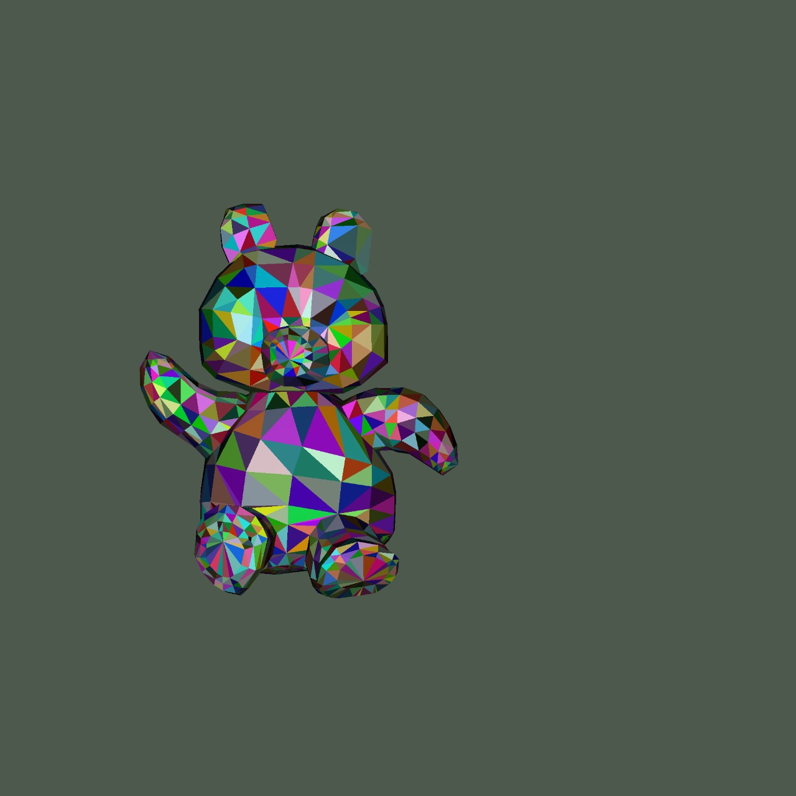
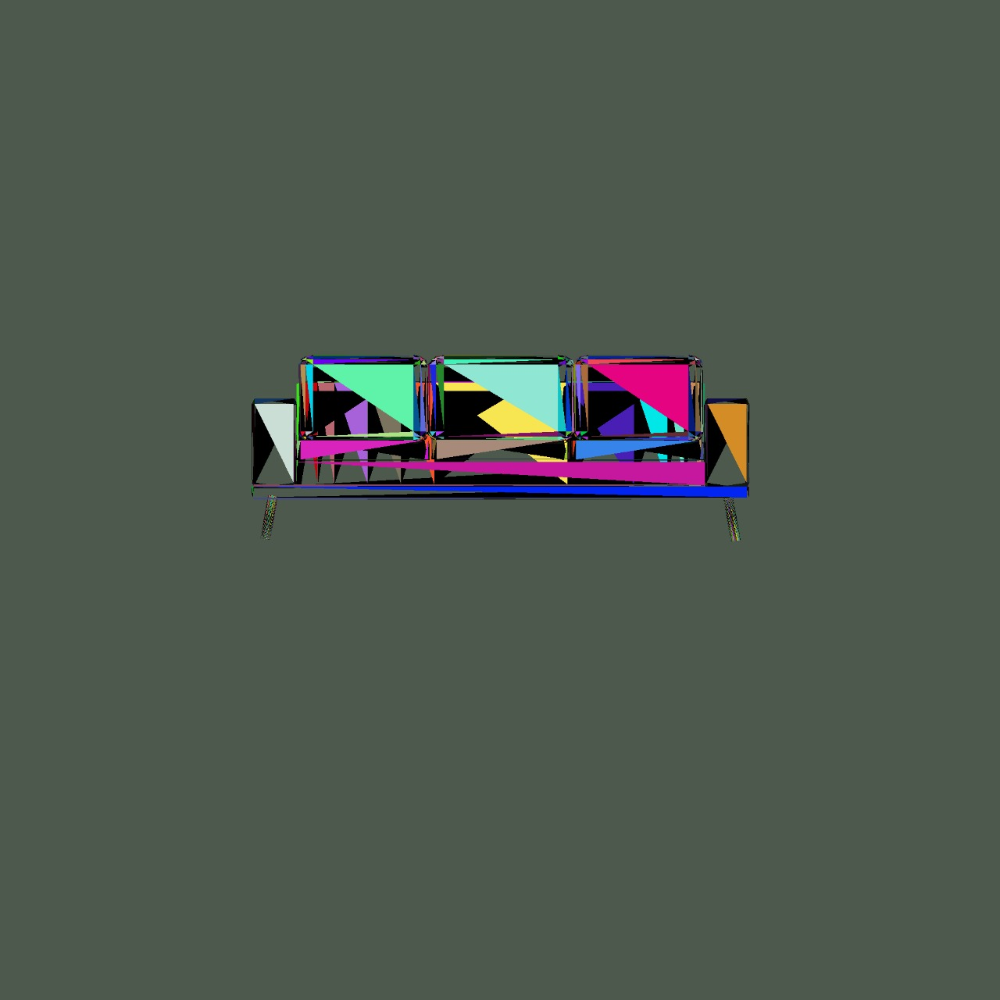
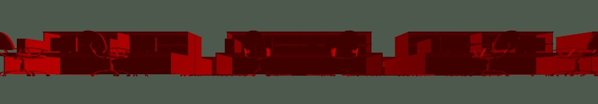
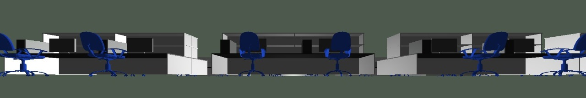
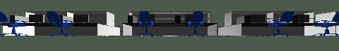
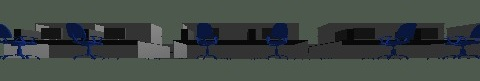
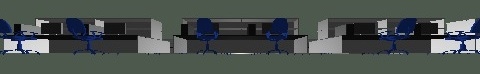
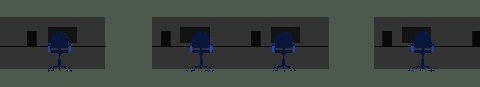
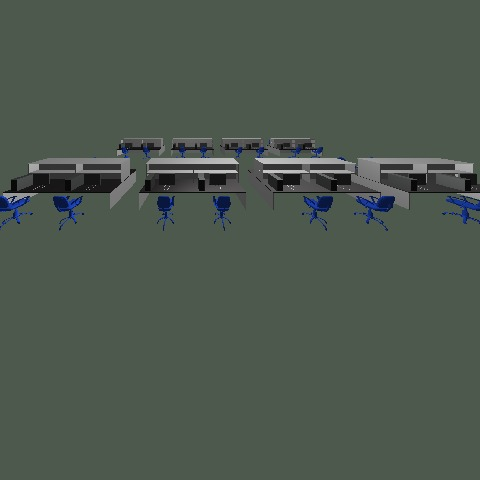
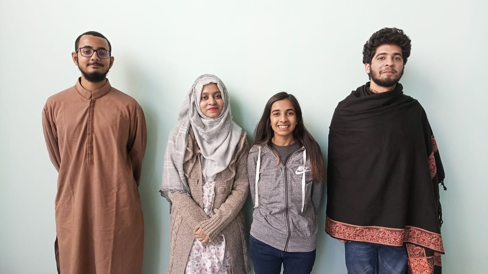

“Rendering a Scene with our own made RayTracer on C++”
Concept
While our group was sitting in the projects lab, a place where we have been living our lives for the past 6 months, deciding what scene should we be building for the Graphics Project, everyone was pitching ideas. Some piched that we should build a scene with the Habib University logo, some pitched the idea that we should build some abstract art with the habib color theme, but with all these pitches, not all members were satisfied as we had to do something that had to do something with each and everyone lives. We were looking around in the projects lab looking for objects that we can model, and suddenly Ahsan exclaimed, 'Projects Lab'. We came up with the idea of projects lab, where we had shared some of the best moments, not just of the semester, but of our lives. A place where we had learned to devote entire semesters to a single project. A place where we used to eat and laugh and play. So, this is how we decided on our scene for the project.
Scene
The scene was built on Cinema 4D, a 3D modeling software. The scene was made totally from scratch except two assets which were taken from a website named free3d.com. The two assets were the chair, and the monitor. The reason why we used the online assets was to increaset the primitives in our scene as our made assets had very few polygons, and was not adding to the 1 million score. The texture was also made from scratch for the whole scene. One the scene was complete, it was exported to Blender in .dae format for further editing and simplification. This included in mainly reducing the size of the scene. The scene was then again exported from Blender in .obj format to be used in the project.
Image Features
- +2.5 Million primitives
- Multiple textures
- Small objects with large number of primitives
- Large objects with very few number of primitives
- Illustrates the example of teapot in a stadium
Code Features
- Multithreading
- Octree
- Directional light
- Point light
- Ambient light
- OBJ parser
- Shadow(not working properly)
- Matte Material
- Phong Material
- Bounding Boxes
Acceleration
All the builds presented are present in the build folder. Click on an image for a better view.
| Resolution | Without Octree (seconds) | With Octree (seconds) | Number of Primitives | Scene | Build |
|---|---|---|---|---|---|
| 2000x2000 | 619.099 | 18.35 | 3192 |  | Build_3 |
| 2000x2000 | 101.58 | 5.13 | 780 |  | Build_5 |
Progress
Add the new3.obj(scene) file to root(folder with raytracer.cpp)
With constant color and Matte Material  With variable color and Matte and Phong Material  With variable color and Matte and Phong Material (low resolution)  Without Point light  Without Directional  Orthgraphic  Without Directional With proper camera alignment 
Acknowledgment
The three assets Monitor, Bunny, and the chair were taken from the website, https://free3d.com/
CSS template taken from https://anomoz.com
Team
Comments
No comments.
Bloopers/Experiments
.jpeg)
.jpeg)
.jpeg)
.jpeg)
.jpeg)
.jpeg)
.jpeg)
.jpeg)
.jpeg)